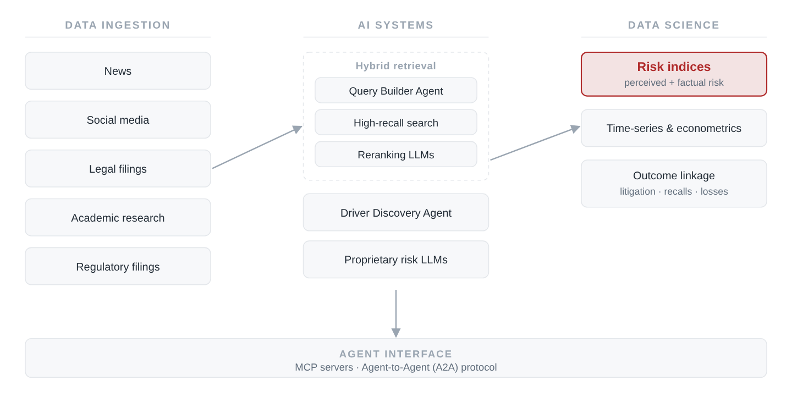

Research & Writing
2026

Photometric Super-Resolution for Improving Galaxy Morphological Measurements using Conditional Generative Adversarial Networks
arXiv:2604.20195 (2026)
Morphological parameter estimation from astronomical images is limited by seeing, pixel scale, and depth. NEO is a conditional GAN: a U-Net generator with a super-resolution stage, paired with a PatchGAN discriminator, trained on ~1.5M paired HSC/HST cutouts in the COSMOS field. It reduces effective-radius bias from 0.72 ± 0.18 to 0.04 ± 0.30 and FWHM bias from 0.82 ± 0.05 to −0.02 ± 0.06, generalises to fields never seen during training, and reproduces the HST empirical PSF including its diffraction spikes. Built for LSST-era surveys in combination with HST, JWST, and Roman.

Towards a theory for Earth's albedo stability and hemispheric symmetry in the 21st Century
Communications Earth & Environment (Nature Portfolio), 21 July 2026 · Open access
Understanding of top-of-atmosphere albedo stability and hemispheric symmetry remains largely phenomenological, producing diverging 21st-century estimates. We set out a framework for hypothesis testing and theory development, examine two competing hypotheses (that albedo is constrained by invariant Earth system properties, or is maintained by cloud buffering) and argue for a supporting role for AI methods that express the non-linear processes underlying these phenomena. Response to and relaxation from stratovolcanic eruptions offers a route to falsification.
Patents
Approaches to Predicting the Impact of Marketing Campaigns with Artificial Intelligence and Computer Programs for Implementing the Same
U.S. Patent application 110565.8005.US01
Causal-inference methodology for isolating the true effect of a marketing campaign on a business metric in the presence of trend, seasonality, holidays, and latent confounders.
Press
Making Sense of the Early Universe: How AI and GPUs are helping astronomers work through unprecedented volumes of cosmic data
NVIDIA Blog, April 2026, featuring the NEO super-resolution work
Theses

The Shape of Dark Matter Halos in a ΛCDM Cosmology
Senior thesis, B.S. Physics, University of California, Santa Cruz, 2013
Measurement of dark matter halo concentration and triaxial shape in the Bolshoi and MultiDark N-body simulations, comparing shape estimators across redshift and testing how the relaxation criteria (offset parameter and virial ratio) affect the recovered mass–concentration relation.
Writing

Verifiable Rewards for Predicting Multidistrict Litigation
A daily agentic discovery loop: a Thompson-sampling bandit allocates frontier research agents across search strategies under a reward computed in code, feeding a discrete-time hazard model of MDL consolidation at 0.90 held-out AUC.

Agentic Discovery for Science
An autonomous AI scientist that ran 19 cycles and 49 analyses across 12 methodologies on 25 years of CERES satellite data, gated by a mandatory adversarial self-check, shuffle, confound, and robustness tests, before any result was recorded. Found that ENSO mediates hemispheric albedo coupling, and that cloud→albedo causality is unidirectional. Reported one of its three hypotheses as inconclusive.

What GRPO Actually Optimizes
I treated a supervised label as an RLVR verifier and ran six GRPO configurations on a production risk classifier. Every variant landed on one ROC curve, and the labels drew it.

RiskWise for the Era of Hyper-Automation
Why we built RiskWise: a platform that scales and automates risk analytics for the age of agents, and the emergent structure of risk it uncovers.

The Agent Risk Harness
An agent is only as useful as the context it can assemble, the tools it can invoke, and the constraints that govern how it acts. What it takes to turn a model into a system.

Improving Forecasting Models with Large Language Models
Augur, our LLM-guided covariate search. 15.6% average MAPE reduction, 13× faster, with logical validation of predictors.

Seeing Risk Clearly: Moving Past Emotion to Measure Risk Exposure
Why sentiment is a poor proxy for exposure, and what an event-linked risk index looks like instead.

Whispers of Latent Reasoning
A 4B thinking-tuned model beats GPT-5.2 on entity-level risk attribution, and keeps the gains even with chain-of-thought suppressed.

RiskWise and Frontier AI: Rethinking How Emerging Risk Is Measured
Frontier models generate risk indices quickly, but reliable measurement needs transparent, event-linked signals. A head-to-head.

Surpassing Frontier AI for CPG & Retail
Dynamic hierarchical product categorization: a domain-tuned system beating OpenAI and Anthropic, at 100–1,000× human speed.

Cold Start & Tuning for Retrieval Augmented Generation
How to tune a RAG system when you have no labelled data yet: chunking, retrieval parameters, and the MMR diversity trade-off.

Predicting the Impact of Marketing Campaigns with AI
Year-over-year comparison is the wrong tool when the data-generating process isn't constant. Building a counterfactual instead. (Basis for a US patent application.)

The AI-Augmented CPG, Part 1: What to Think About When Adopting AI
Four things to settle before expanding investment in generative AI: data sourcing, security, model selection, and evaluation.

Recurrent networks for microgrid power forecasting
Predicting solar array max power point 10–60 minutes ahead at the NASA Ames Renewable Energy Testbed. Built the full pipeline: sensor integration on a Raspberry Pi, a MySQL schema and cron ingestion at five-minute resolution, then recurrent network models over the resulting series. Chart shows predicted (blue) against observed (red) at a ten-minute horizon.